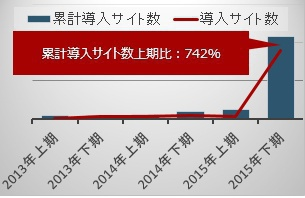
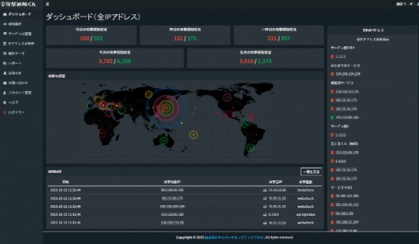

株式会社サイバーセキュリティクラウド（東京都渋谷区 代表取締役：新田 憲佑 以下、サイバーセキュリティクラウド）は、セキュリティサービス「攻撃遮断くん」の導入サイト数が2015年上期比で742％増を達成し、1200サイト※を突破いたしましたことをご報告いたします。※2016年3月末時点
■導入サイト増加の経緯
近年、政府機関や国内企業のサイバー攻撃が急増しており、2014年の日本へのサイバー攻撃関連通信は256億件※ありました。政府はこの状況を深刻に受け止めており、2020年に行われる東京オリンピックを視野に入れ、「サイバーセキュリティ基本法」を2014年11月に制定し、今後３年程度の基本的な施策の方向性が示されました。 2015年12月末には経済産業省から「サイバーセキュリティ経営ガイドライン」が公表され、サイバーセキュリティに関する取組を行うことが、企業経営にとって重要なものとなってきました。
企業にとってWEBサイトは欠かせないものであり、サイバーセキュリティに関する取組への関心が高まる中、WEBサイトのセキュリティを行う「攻撃遮断くん」はサービス開始以降企業様の支持を受けて導入数が増え続けております。※Itpro 2014年の日本へのサイバー攻撃関連通信は前年比倍増、NIC調べより
「攻撃遮断くん」が企業様に支持を受け導入数を増やしてきた要因として以下の3つがあげられます。
①手軽さ
専門的な知識が無くても簡単に導入をすることが可能です。サービス開始後も運用保守の作業は一切無く、技術者のいない企業様でも安心して導入が出来ます。
②圧倒的安さ
従来のクラウド型WAFの３分の１以下の低価格で提供しています。月額1万円からサービス開始が可能です。
③高セキュリティ
NTTドコモ様をはじめ、官公庁、大手金融機関などの大手企業からも多数の支持を受け、ご導入頂いております。
また、2015年10月にFQDN数無制限プランをリリースしたことにより、多くのWEBサイトを持つ企業様でも従来よりも大幅なコストカットをしてセキュリティ対策を行うことが可能となりました。
2015年11月には日本初の無料攻撃可視化ツール「攻撃見えるくん」のリリースを機に導入数が増加しています。このような経緯を受け、「攻撃遮断くん」はわずか3年で1200サイトの導入を突破し、2015年上期比で742％増を達成いたしました。
<攻撃遮断くんについて>
「攻撃遮断くん」は、サーバへのあらゆる攻撃を遮断するクラウド型WAF+IPSのセキュリティサービスです。革新的な仕組みにより、クラウド(IaaS)を含むほぼ全てのサーバに対応し、 ネットワーク、OS、 Webアプリケーションへの攻撃を防ぎます。保守・運用に一切の手間をかけることなく、24時間365日のセキュリティを実現します。
NTTドコモ様をはじめ、官公庁、大手金融機関、大手航空会社、大手ECサイト、大手広告代理店、大手メーカーなど、250IP･1200サイト以上に導入いただいております。
【本件に関する報道関係者からの問い合わせ先】
株式会社サイバーセキュリティクラウド
担当：川島
TEL：03-5774-2538
FAX：03-5774-2539
E-Mail：pr@cscloud.co.jp
＜主な機能＞
■リアルタイムで攻撃状況を可視化
■24時間365日 サービスの申し込み可能
■最短翌日にサービス開始可能
■国内開発、国内データセンターの運用で安心
■過去の攻撃データから分析可能
■監視センターとの接続状況確認可能
■お客様に合わせたフルカスタマイズ機能を実装
■シグネチャは自動で最新にアップデート
■クラウド（IaaS）への対応
■ご担当者様での保守・運用作業は一切必要なし
■ネットワーク構成の変更やサーバ停止の必要なし
■ほぼ全てのOSに対応
■サーバへの負荷は1%以下
＜価格＞
■攻撃見えるくん…月額0円
■攻撃遮断くんサーバセキュリティタイプ…月額40,000円～
■攻撃遮断くんWEBセキュリティタイプ…月額10,000円～
詳細は料金プランページをご覧ください：料金プランページ
【会社概要】
■会社名：株式会社サイバーセキュリティクラウド
■本社所在地：〒150-0002 東京都渋谷区渋谷2-3-8 倉島渋谷ビル6階
■設立：2010年8月
■資本金：1億2,920万円（平成28年3月1日現在）※資本準備金を含む
■代表者：代表取締役 新田 憲佑
■事業内容：サイバーセキュリティ事業
(1) 「攻撃見えるくん」「攻撃遮断くん」の開発・運用・保守・販売
(2) サイバー攻撃対策コンサルティング
■販売代理店：
株式会社ブロードバンドタワー、GMOクラウド株式会社、株式会社ネットワールド、鈴与シンワート株式会社、株式会社TOKAIコミュニケーションズ、ＡＧＳ株式会社、その他、IDC、Sier、制作会社など数十社
■ソリューションパートナー：ビッグローブ株式会社、株式会社インターネットイニシアティブ
SOFTLAYER、an IBM Company、フュージョン・コミュニケーションズ株式会社
■企業ホームページ：http://www.cscloud.co.jp/